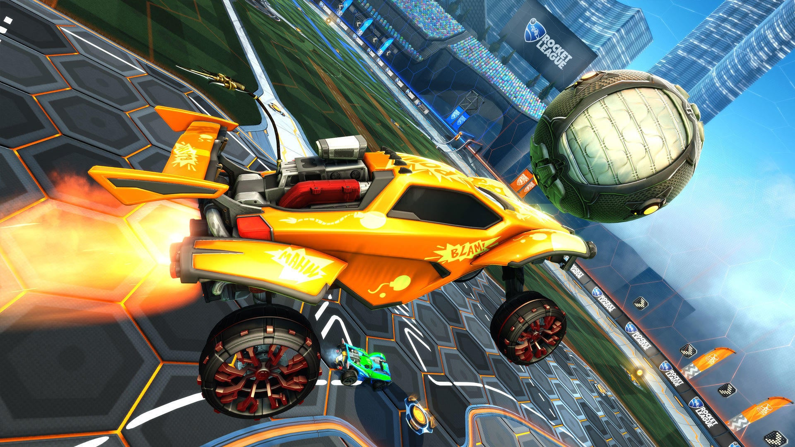

Discipline
Koje su to esport video igre?
Esport igre mogu biti svih žanrova, ali najpopularnije su MOBA (najlakše opisana kao strategija u kojoj kontrolirate svog heroja), FPS (pucačina iz prvog lica), igre u kojima se tučete, battle royale igre u kojima prikupljate oružje i opremu te se borite s protivnicima da biste ostali posljednji i tako dalje.
Trenutačno u svijetu postoji velik broj esport naslova, ali neke od igara koje vrijedi izdvojiti su League of Legends, Counter Strike: Global Offensive, Dota 2, StarCraft 2, Overwatch, Rainbow 6, Fifa, Call of Duty, Street Fighter, Halo, Super Smash Bros., Fortnite i PUBG. Ovo je tek vrh sante esport naslova, naravno.
Counter Strike
Counter-strike (eng. protu-napad) jedna je od najpopularnijih FPS ("pucačina" iz prvog lica) igara dobivena modifikacijom igre Half-Life koju su napravili Minh Lee i Jess Cliffe. Postoji nekoliko verzija igre, kao što su Counter-Strike 1.6, Counter-Strike: Condition zero, Counter-Strike: Source, Counter-Strike: Anthology i Counter-Strike za Xbox. U Counter-Strikeu se tim protu-terorista ("kauntera", specijalaca, specijalne policije) sukobljava s teroristima ("terorima"). Svaki krug završava eliminiranjem protivničkih igrača ili ostvarivanjem cilja.

League of Legends
League of Legends (LoL) je videoigra koju je razvio i objavio "Riot Games" za Microsoft Windows i macOS. Inspirirana je Warcraft III: The Frozen Throne modom Defense of the Ancients. Igra je besplatna, a prihod ostvaruje mikrotransakcijama.[1] U samoj igri, igrači preuzimaju ulogu šampiona (champion) s jedinstvenim sposobnostima i moćima (abilities), koji se kao tim bore jedni protiv drugih – ili protiv računalno kontroliranih šampiona (botova). Cilj igre je uništiti "Nexus" protivničkog tima, koji se nalazi u srcu protivničke baze, i zaštičen je raznim strukturama (structures) koje se moraju uništiti.

Rocket League
Igrači kontroliraju svoje automobile kojima pokušavaju pogoditi veliku loptu te zabiti pogodak. Igrači iz cijeloga svijeta međusobno igraju jedan protiv drugoga te imaju određeno vrijeme igre (5 minuta) kako bi zabili pogodak i pobijedili utakmicu. Automobili tijekom igre mogu skakati te ubrzavati tako što skupljaju energiju koja se nalazi širom terena. Ako je na kraju utakmice izjednačeno, igraju se produžetci dok netko ne zabije pogodak.
